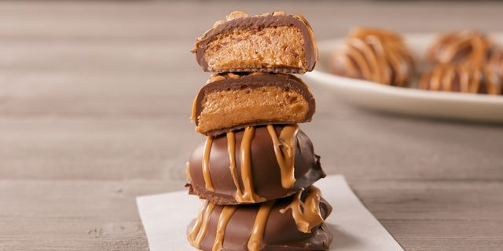

KETO PEANUT BUTTER COOKIES
Prep time:1 hours 30 mins
Yield: 22
Ingredients
Steps
- In a medium bowl, combine peanut butter, coconut flour, sugar, vanilla, and salt. Stir until smooth.
- In a medium bowl, whisk together melted chocolate and coconut oil.
- Using a fork, dip peanut butter rounds in chocolate until fully coated then return to baking sheet. Drizzle with more peanut butter then freeze until chocolate sets, about 10 minutes.